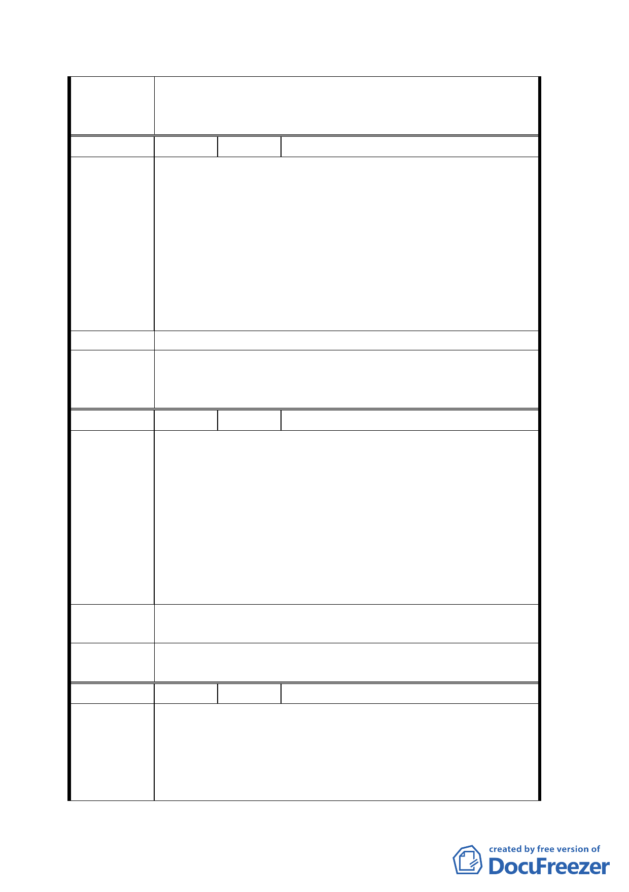

理及停車位問題。
三、請市府相關單位通盤檢討双和里及鄰近地區都市計畫
及更新事宜。
編 號８
陳情人 景勤里辦公處
本基地為鄰近台北市副都心信義計畫區僅有一塊黃金地
段，為最佳落實都市再發展之契機，高度發展的擴散效應
與信義路世貿中心、國際金融中心，加上公共運輸捷運系
統的整合與開發陸軍保養廠用地，變更後提供更多的公共
陳 情 理 由 設施用地，公園、綠地、足夠的停車空間、多功能動休閒
設施，皆為本區提供了優越的生活環境，有了如此良好的
立地條件，配以高度更新可能的建物型態，透過都市更新
之方式，逐步改變東區吳興街地區景觀，全面提昇整體社
區環境品質，落實都市再發展之事業。
建 議 辦 法 建議改為特商區整體開發。
一、本案原則通過。
委 員 會 決 二、請市府相關單位通盤檢討双和里及鄰近地區都市計畫
議 及更新事宜。
編 號９
陳情人 國防部軍備局
一、軍方原列管 7.6216 公頃住宅區土地，已奉行政院核定
納「國軍老舊營舍改建基金」清冊，作為變產置產財
源，依現土地價值粗估概約 176 億元，惟依貴府修正
後，本部可處分之土地（住三特）面積僅剩 4.5845 公
陳情理由
頃，以容積率 350%計算，土地價值概約 165 億，影響
基金業務推展。
二、另基金納管三興段二小段 428-8、428-62、428-63 地
號等三筆土地，毗鄰案內規劃基地，該等土地於基地
開發後形成畸零地無法單獨處分。
建議辦法
一、請惠予修正。
二、請併案辦理規劃。
委 員 會一決、 一、本計畫案原則通過。
議 二、 二、另三筆土地因零散分佈於計畫區外，無法納入本案。
編 號 １０ 陳情人 林崇賢
本基地範圍將近 50 公頃，為台北市少數未開發之大型基
地，被賦予多項功能之期許，另一方面，信義區人口及建
陳 情 理 由 築物密度過高，如能全部做為大型公園或開放空間使用當
然是第一志願，然而都市土地寸土寸金，不得不以開發換
取公園綠地為次選，因此在開發時，需想辦法減少建築物
七